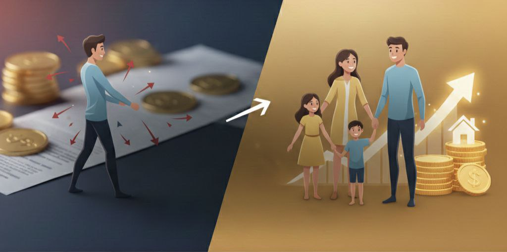
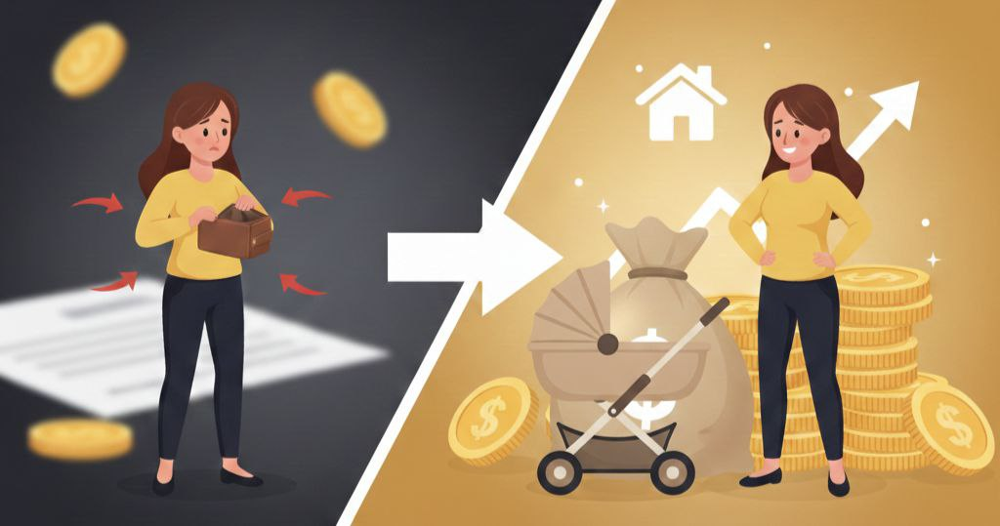

Молодая семья

От конфликтов к общим целям
Было:
- Постоянные споры о деньгах
- Каждый тратил как хотел
- Нет накоплений, живут в минус
- Кредитная карта на 150 000 ₽
↓
Что сделали:
- Составили семейный бюджет
- Договорились о правилах трат
- Разработали план выхода из долгов
- Поставили общую цель — квартира
↓
Результат через 6 месяцев:
- ✓ Погасили кредитную карту
- ✓ Накопили 250 000 ₽ на первоначальный взнос
- ✓ Больше нет конфликтов из-за денег
- ✓ Откладывают 30% дохода ежемесячно
Одинокая мама

От нехватки к финансовой подушке
Было:
- Зарплата 65 000 ₽, двое детей
- Денег не хватает до конца месяца
- Регулярно берет микрозаймы
- Нет понимания, куда уходят деньги
↓
Что сделали:
- Проанализировали все расходы
- Нашли «лишние» 12 000 ₽ в месяц
- Создали систему конвертов для разных категорий
- Настроили автоплатежи
↓
Результат через 4 месяца:
- ✓ Финансовая подушка — 120 000 ₽
- ✓ Больше не берет займы
- ✓ Уверенность и спокойствие
- ✓ Понимает, куда уходят деньги
Предприниматель
От хаоса к финансовой стратегии
Было:
- Доход нестабильный, 80-200 тыс/мес
- Бизнес и личные деньги смешаны
- Не понимает реальную прибыль
- Нет резерва на форс-мажоры
↓
Что сделали:
- Разделили личные и бизнес-финансы
- Настроили учет доходов/расходов
- Создали резервный фонд бизнеса
- Спланировали личные инвестиции
↓
Результат через 8 месяцев:
- ✓ Резерв бизнеса — 500 000 ₽
- ✓ Личная подушка — 400 000 ₽
- ✓ Начал инвестировать 50 000 ₽/мес
- ✓ Понимает финансовую картину полностью